| 日付 | 2026年10月3日（土） |
|---|---|
| 山域 | 谷川 |
| メンバー | 単独 |
| 山行形態 | 前夜泊日帰り |
| アクセス | 車 |
| ルート (Map) | 白毛門登山口駐車場 (4:31) - (4:59) 西黒尾根入口 - (6:31) ラクダのコル - (7:31) トマの耳 - (7:44) 谷川岳オキの耳 - (8:10) トマの耳 (8:19) - (9:11) オジカ沢ノ頭 - (10:46) 万太郎山 - (12:20) エビス大黒の頭 - (13:09) 仙ノ倉山 (13:16) - (13:51) 平標山 - (15:58) 渡渉点 - (16:41) 登山口 - (17:47) 土樽駅 |
白毛門登山口駐車場で車中泊。標高690m。
4:30の未明に出発する。4時ごろから次々と車が入って来ていた。
トイレがないのは欠点だが車中泊が禁止されていない貴重な駐車場だ。
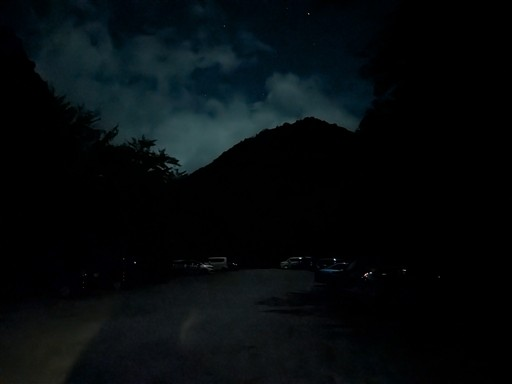
歩いて谷川岳インフォメーションセンターの駐車場に移動。
ここでトイレを利用。まだ空きはあるがそこそこ車が入っている。
暗くて全体像が見渡せず、どの程度が埋まっているかはよく分からない。
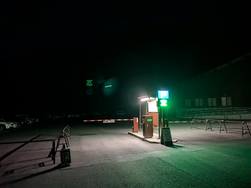
西黒尾根登山口に到着。
真っ暗闇の中、他にも登山者がいるのは、さすが人気のコースだ。
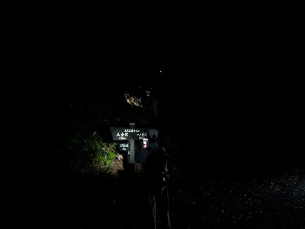
少し登ると空が明るくなってくる。
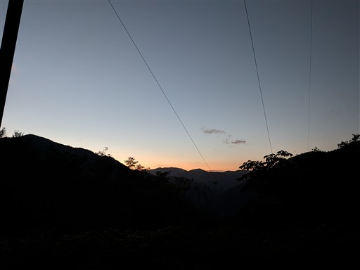
樹林帯の中の登り。朝食を食べながら登っていく。
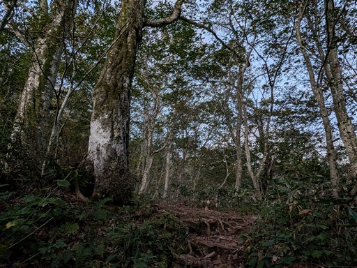
もうすぐ日の出だ。
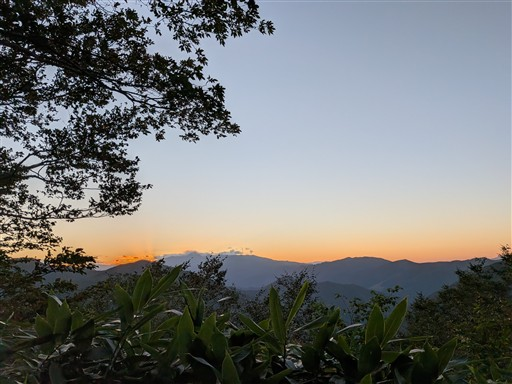
日が出たのか、木が赤く輝きだす。
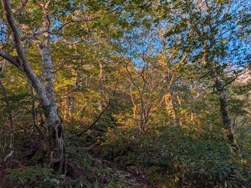
展望ポイントに到着。
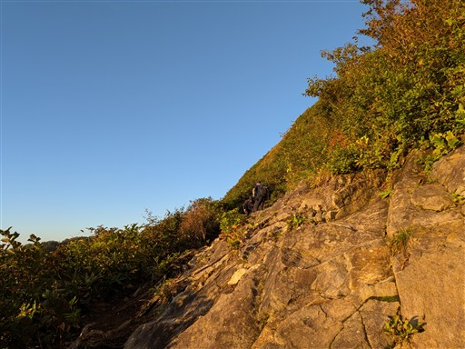
素晴らしい景色が広がる。
もう少し早く出発していれば日の出の瞬間を見られたようだ。
でも展望スポットで日の出を待つタイプではないし、睡眠も大事だ。
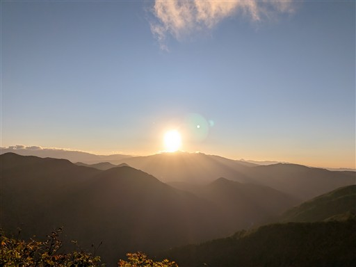
岩場が現れる。簡単な岩場だが右手にまだパンを持っているので登りにくい。
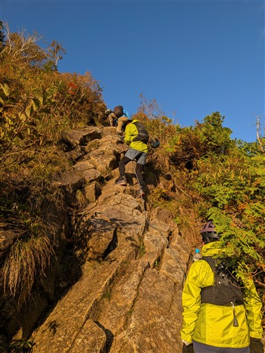
白毛門方面の展望が広がる。
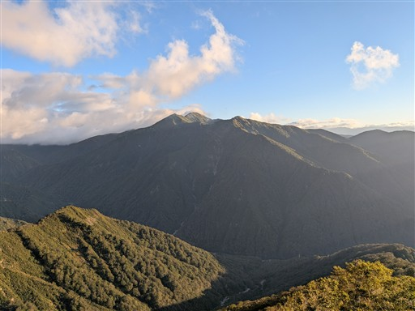
ロープウェイの駅が見えている。
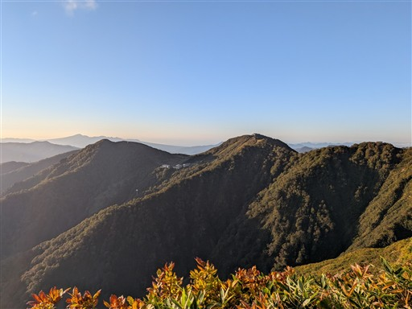
谷川岳の山頂付近は雲がかかっている。
本日は日中晴れ予報なので、これから雲が消えてくれるだろう。
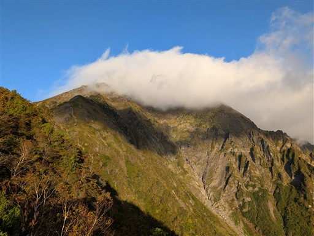
次なる岩場。ここも容易。
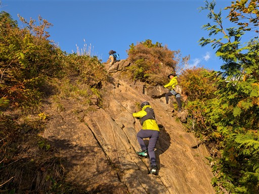
ラクダの背に到着。この辺りでようやく朝食のパンを食べ終わる。
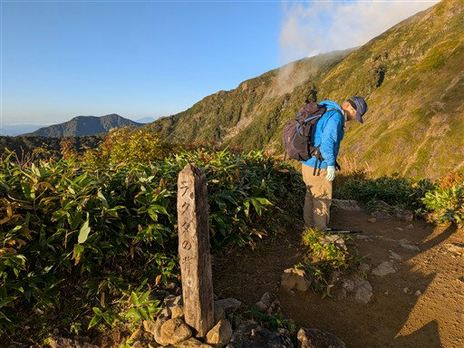
続いてラクダのコル。厳剛新道との合流点。
以前、谷川岳に登ったときは厳剛新道経由だった。
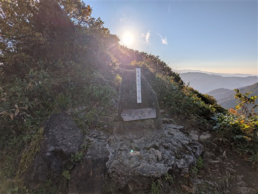
ここからは勝手知ったる道。と言っても以前にここを歩いたのは17年も前のことだ。
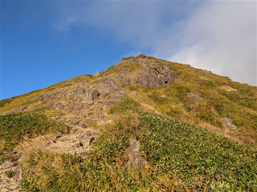
岩がちな尾根。歩いていて結構楽しい。
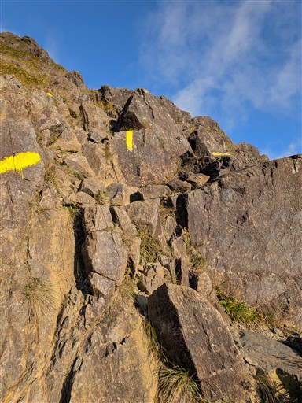
ただ、蛇紋岩なのでかなり滑る。
登山者が多く歩くことで岩の表面はスベスベだ。
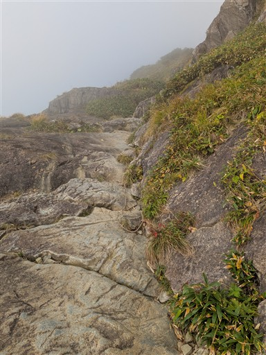
赤城山が見えている。右の方は榛名山だろうか。
子持山、小野子山も見えている。
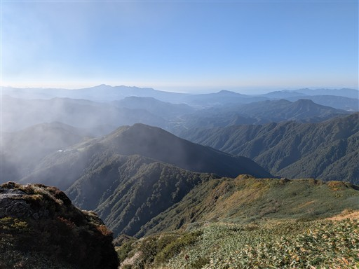
肩の小屋との分岐点。ここを右に行った先の岩場は難しかった。
正規ルートではないのかもしれない。
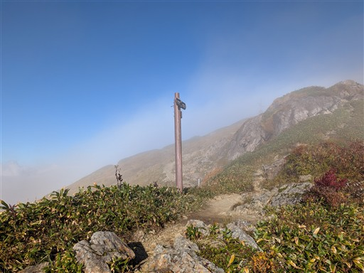
周囲は霧に包まれ、展望は広がらない。
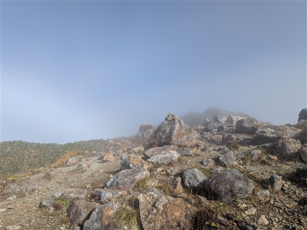
谷川岳トマの耳に到着。残念な天気。
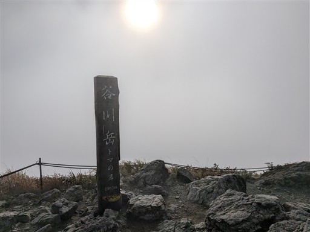
混む前にオキの耳を往復することにする。鞍部からトマの耳を見上げる。
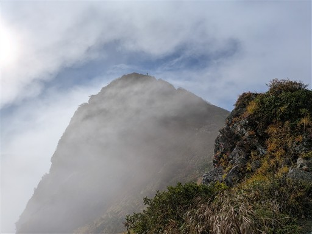
オキの耳に到着。ここが谷川岳最高地点。標高1977m。
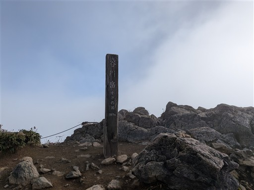
雲が取れて青空が広がる。主脈も辛うじて見える。
雲の量が思ったより多い。すぐには晴れなさそうだ。
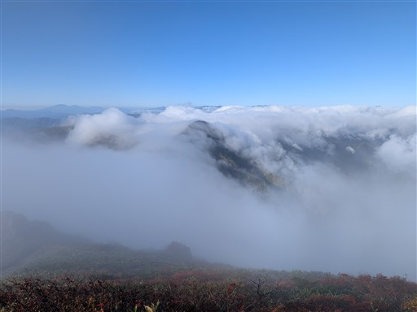
元来た道を引き返す。
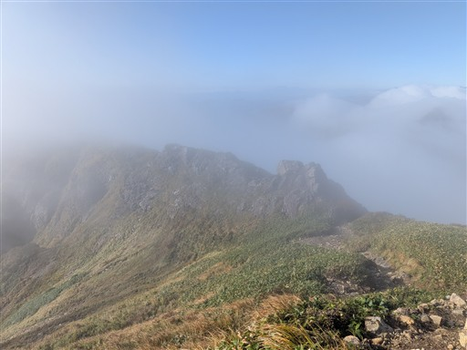
谷を見下ろす。眼下はマチガ沢だ。
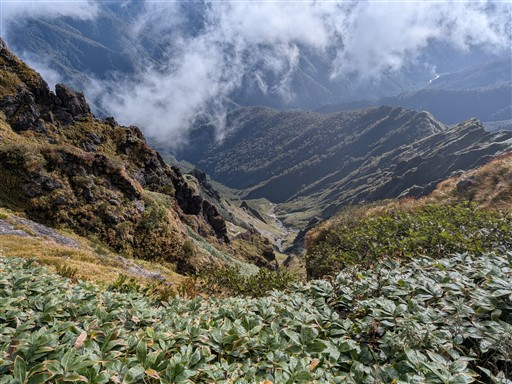
ときどき展望が広がるが、雲が多い。
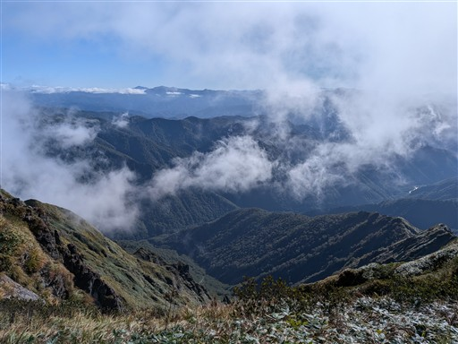
トマの耳が辛うじて見えている。
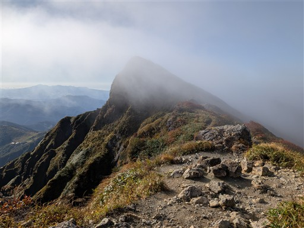
トマの耳に戻ってくる。ロープウェイ組はまだなので、山頂は空いている。
昼時には大混雑になるのだろう。
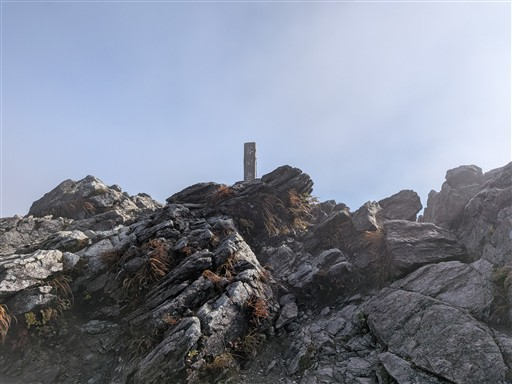
この天気なのでブロッケン現象は現れやすい。
でも、それよりも晴れてほしいところだ。
晴れてから主脈縦走に入りたかったが、無理そうなので出発する。
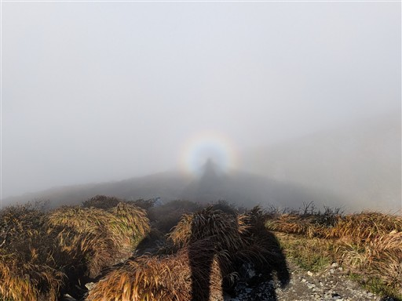
肩の小屋。ここに泊まると余裕のある山行になるが予約が必要だ。
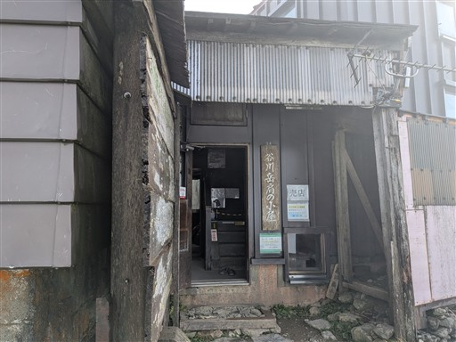
ここから主脈縦走。平標の標識がある。しれっと書かれているが結構遠い。
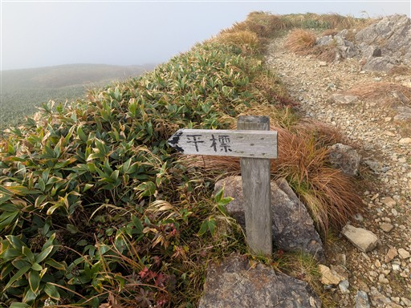
周囲は紅葉が始まっている。
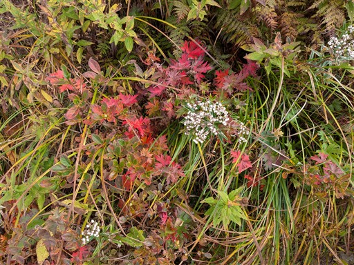
雲の中の縦走が始まる。
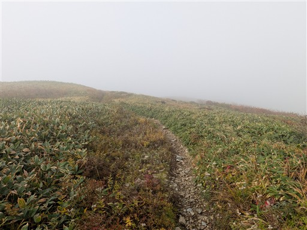
登山道はよく整備されていて歩きやすい。
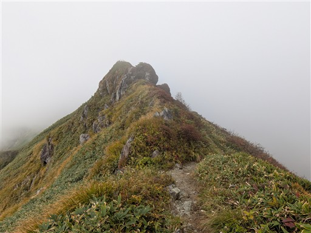
左側の展望。どんな景色が広がるのだろう？
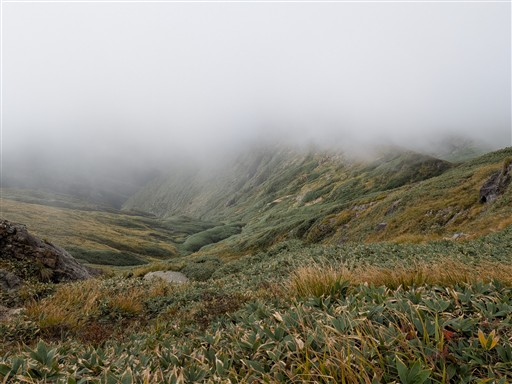
花と紅葉。
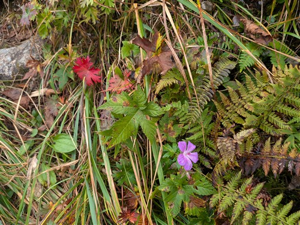
雲が少しだけ消える瞬間はある。美しい尾根道が見える。
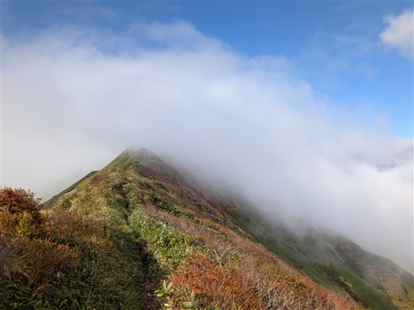
展望が開けて赤城山などが見えている。
でも横の景色じゃなく縦の景色が見たい。
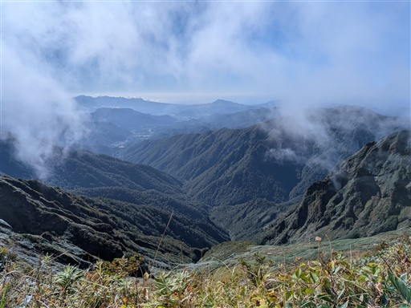
何やら風格のある山の斜面が見えるが、どの辺りだろう？
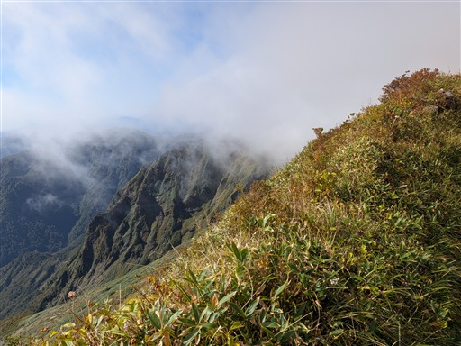
マツダランプの標識。
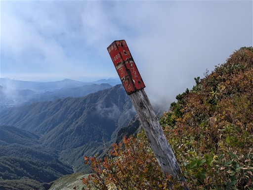
この辺りは紅葉がきれい。青空出ていたらもっと映えていただろう。
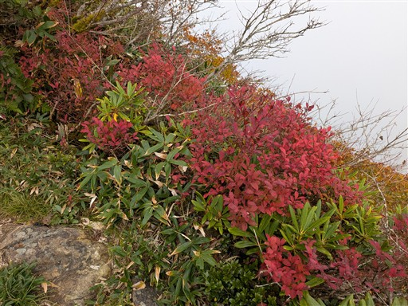
コース中にある数少ない鎖場。
この辺りはもう蛇紋岩じゃないはず。
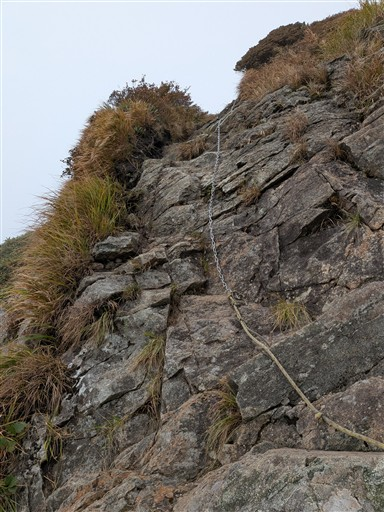
オジカ沢ノ頭に到着。主脈最初のピーク。
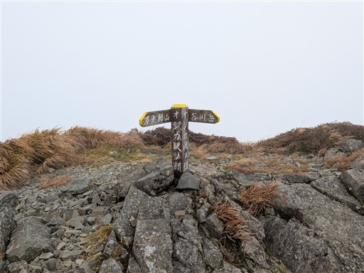
その先にあるオジカ沢ノ頭避難小屋。主脈にあるのはこのような形の避難小屋ばかり。
トイレは無いし満室も怖いので、あまり計画には組み込みにくい。
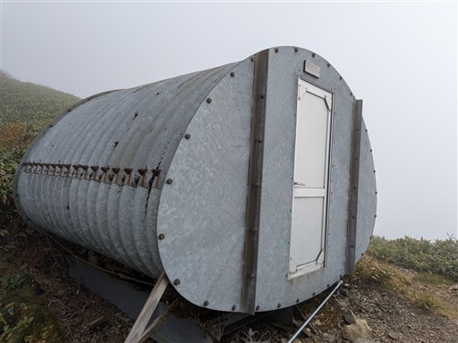
雲の中の稜線歩きは続く。
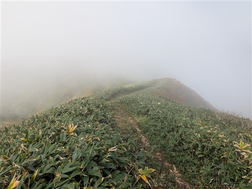
右手の新潟側の展望が広がる。湯沢の辺りの町が見えている。
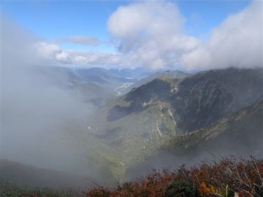
少し展望が広がるが、全貌は分からない。
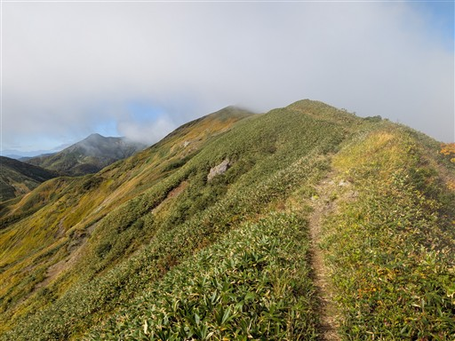
登山者とすれ違う。人は少ないが、所々で登山者と出会う。
黄金色の美しい斜面が広がる。
谷川連峰は一本の稜線というイメージを持っていたが、案外複雑な形をしてる。
斜面の紅葉が美しい。
鈍い展望だが、縦走路が見えている。その先の万太郎山は雲の中。
大障子避難小屋が見えてくる。1泊2日で主脈縦走するなら、第一候補となる小屋だ。
川棚ノ頭方面の尾根。谷川岳から眺めるとよく目立つ尾根だ。
振り返ると急峻な崖のある山が見える。茂倉岳の辺りだ。
左手の群馬側の景色が広がる。斜面が美しい。
そしてその黄金色の斜面の上を縦走路が通っている。
真中のピークは先ほど登ったオジカ沢ノ頭、その奥の谷川岳は雲の中。
どなたかの落とし物。
大障子ノ頭に到着。
目の前の万太郎山は雲の中。
10時を過ぎても雲の量は多い。朝日が出て動きのあった雲も、この位置で定着してきた。
予報に反して、本日は晴れないのだと悟る。
不思議な形のピーク。
稜線の直下に小さな池がある。稜線でカエルを見かけたのはこのせいか？
斜面の紅葉。
万太郎山に向かって登る。
吾策新道分岐の標識は倒れてしまっている。
万太郎山に到着。標高1954m。
ちょうど中間地点にある大きなピークだ。疲れていたらここから下山しようと思っていたが
まだ大丈夫なため先に進むことにする。
ここからは稜線がちょっと細くなる。
痩せ尾根。ちょと道が細い。でも紅葉が美しい。
雲の中にあるのは、ラスボス仙ノ倉山なのだろうか？
図体は大きそうだが、雲の中のためどんな山なのかさっぱり分からない。
花と紅葉その2。こちらはハクサンイチゲ。
越路避難小屋。小さそうな小屋だが縦走時はここに泊まるのもあり。
この辺りは少し道が細い。歩くのに支障が出るほどではない。
南側はよく晴れている。遠くの方に見えているのは榛名山。
大きなアザミの花。
最低鞍部付近まで下りてくる。ここが谷川主脈で最も低い場所だ。
下りてきた斜面を見上げる。
そしてこれから登る斜面。
遠くに見えているのは恐らく皇海山。
本日の天気が悪いようだと皇海山にしようかと考えていた。
あちらの方が晴れているが、それでも結構雲が出ているように見える。
エビス大黒の頭に到着。視界は全くない。
展望のない稜線を歩いていく。
エビス大黒避難小屋。かなり小さな小屋だ。
あとは仙ノ倉山に向かって、笹原の広がる斜面を登っていく。
キオンの花が咲いている。秋の花だ。
仙ノ倉山に到着する。標高2026m。
谷川連峰の最高峰。今年の西暦登山の山でもある。
大きな山名盤があるが、見える山は一つもない。
平標山までは木段が整備されている。ここからは人が多い人気の登山コースだ。
緩やかな斜面に続く木道。展望が全くないのが悔やまれる。
ところどころにハイマツがある。こんな標高の場所にもハイマツがあるとは知らなかった。
チングルマの紅葉が見事だ。
そんな中、他の登山者にチングルマが一輪だけ咲いていると教えてもらう。
周りが紅葉している中、花を咲かせているとは驚きだ。
あとは緩やかな斜面を歩いて平標山に向かう。大した登りはもう無い。
平標山に到着。谷川主脈の最後のピークだ。
登りはまだ余裕がある感じだが、左膝が痛い。
下山は予定通り、平標新道を歩く。マイナールートなのでここからまた静かな道だ。
マイナールートだけあってかなり歩きにくい。
笹が刈り払われているだけありがたいが、それでも歩きにくい。
通過記録が少ない道で、沢登りの人が主に下山に利用している。
池塘が現れる。
この辺りは木道すら無い。湿った草を踏んで歩いていく。
風光明媚な場所だ。天気がよければ素晴らしい展望が広がっただろう。
雲の下に出てきて視界が広がる。本日は1800m以上が完全に雲の中だった。
かなりの急傾斜の下りが始まる。
未踏ルートというだけの理由でこの道を選んだが、谷川岳～平標山を歩いた人が
下山で歩くにはあまりお薦めできない道だ。左膝がかなり痛くなってくる。
眼下に見えるのは仙ノ倉谷。
滝が連続する遡行難易度が高そうな沢だ。
見えているのは仙ノ倉北尾根。登山道は無いが積雪期に登られている。
尾根道なので途中で登りもある。ほんの少しだけれど。
この辺りも紅葉がきれい。
ほどなく樹林帯の中の道になる。
やたら大きな木が目立つ。
木のアート。登山道はなんとこの間を潜り抜けていく。
こちらも巨木。
美しいキノコ。
これまた巨木。いろんな植物が着生していてよく分からない形だ。
激下りが続く。地面の泥は結構滑りやすい。
失敗しないよう、慎重にゆっくり下って行く。
木の洞にキノコが生えている。
立派なブナの木。
仙ノ倉沢まで下りてくる。渡渉点だ。
ここなら飛び石で渡れそう。
やたら長いピンクリボンが掛かっている。
ここからは仙ノ倉沢に沿った道なのだが、小さな渡渉ポイントが多い。
歩きにくい場所もあり、あまりスピードが上がらない。
林道に下山。登山口を表す標識が無い。
ススキが茂っている。
ヤマレコの地図には吊橋と書かれているのだが、吊橋は見当たらない。
あとは車道を歩くのみ。下山に思いの外、時間が取られた。
18:10の最終電車まで黄色信号。疲れているが速足で歩く。
ゲートを通過。車はここまで入れる。
洗い越し。ちょっと水量が多すぎる気が…
左半分だけ舗装された謎の道路。なぜこうなった？
毛渡沢橋梁。新旧2つの橋が並んでいるが、上下線でどちらも使われている。
ちょっとした観光スポットだ。
こちらは関越自動車道。
夕方の空模様。この感じだと、今でも山頂部は雲の中だろう。
本日は一日晴れなかった。
土樽駅手前の階段に到着。
階段を登って土樽駅到着。標高600m。
すっかり日が暮れてしまったが、電車が来る23分前に余裕を持って到着できた。
さびれた駅だが、構内には結構登山者がいる。さすがは人気の山域だ。
駅のホームから夕暮れを眺める。
土合駅に移動。長い階段を登るのかと思ったら、それは下り線のみだった。
駐車場まで歩いて無事山行完了。
帰りに諏訪峡というレストランでダムカレーを食して帰る。
今回は初めての日帰りロング山行に挑戦してみた。
筋肉や心肺には余裕があったが、靭帯や腱が先に限界を迎えた感じ。
あまり健康には良くない山行スタイルかなと感じた。
このルートは十数年登る機会を伺っており、絶好の快晴を期待しての縦走だったが、
予想に反してずっと雲の中で、期待に対するギャップとしてはここ数年で随一のガッカリ登山だった。